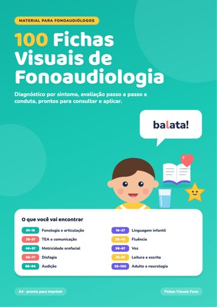
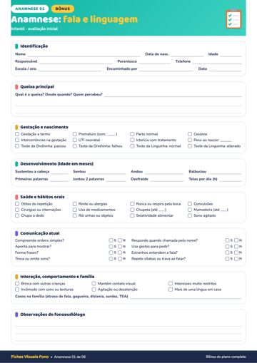
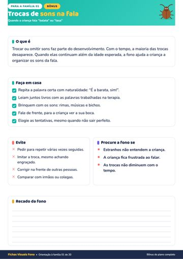
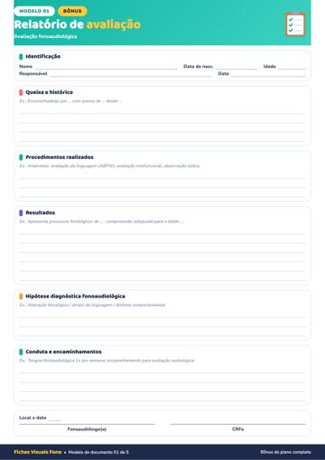
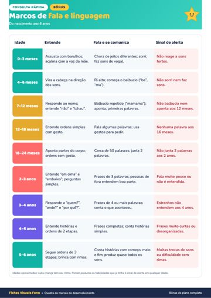

Material principal
100 Fichas Visuais de Fonoaudiologia
101 páginas · 9,4 MB
⬇ Baixar PDFAbrir no navegador



Dica de impressão: imprima em A4, “tamanho real” (100%), colorido. Papel 90 g ou mais deixa as fichas mais firmes para montar sua pasta. No celular, toque em “Abrir no navegador” e depois em compartilhar → salvar em Arquivos.